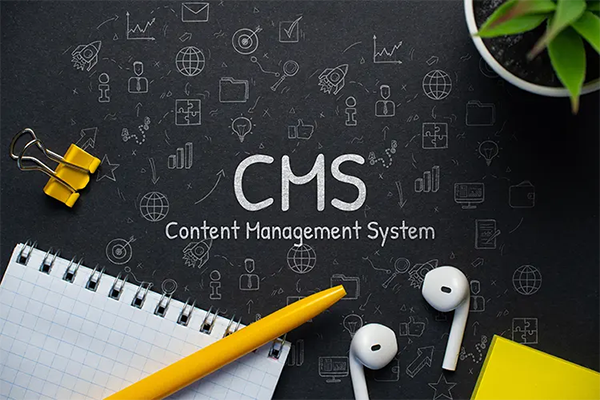

CMS vs strona pisana od podstaw - co wybrać do tworzenia stron internetowych?
Jeśli chcesz stworzyć własną stronę internetową, musisz podjąć ważną decyzję: czy użyć gotowego systemu
zarządzania treścią (CMS) czy napisać stronę od podstaw, używając HTML, CSS oraz Javy Script. Oba
rozwiązania mają swoje
zalety i wady, które warto poznać, zanim zdecydujesz się na jedno z nich. W tym artykule przedstawię Ci
główne różnice między CMS a ręcznym kodowaniem, oraz podpowiem, co lepiej wybrać do tworzenia stron
internetowych.
CMS - co to jest?

CMS to skrót od Content Management System, czyli system zarządzania treścią. Jest to oprogramowanie, które
umożliwia łatwe tworzenie i edycję stron internetowych, bez konieczności pisania kodu. CMS oferuje gotowe
szablony, moduły i wtyczki, które można dostosować do własnych potrzeb i preferencji. Przykładami
popularnych CMS są WordPress, Joomla, Drupal, Wix, Squarespace, Shopify czy Magento.
Zalety CMS:
-
Łatwość obsługi: nie musisz znać języków programowania ani
HTML, CSS czy
JavaScript, aby stworzyć atrakcyjną i funkcjonalną stronę internetową. Wystarczy wybrać szablon, dodać
treść i elementy graficzne, a CMS zrobi resztę za Ciebie.
-
Szybkość: dzięki gotowym szablonom i wtyczkom, stworzenie
strony internetowej
w CMS zajmuje znacznie mniej czasu niż pisanie kodu od podstaw.
-
Niski koszt: większość CMS jest darmowa, a za dodatkowe
funkcje i usługi
płacisz tylko wtedy, gdy ich potrzebujesz.
-
Łatwa aktualizacja: Możesz w prosty sposób aktualizować
treści na stronie,
dodawać nowe funkcje i modyfikować wygląd strony, bez konieczności ingerencji w kod.
-
Wsparcie społeczności: CMS-y cieszą się dużą popularnością,
dlatego łatwo
znaleźć pomoc w internecie, w postaci poradników, kursów, forów dyskusyjnych i grup wsparcia.
Wady CMS:
-
Ograniczona personalizacja: choć CMS-y oferują wiele gotowych
szablonów i wtyczek,
to jednak trudno jest stworzyć stronę internetową, która w pełni odpowiada Twoim indywidualnym potrzebom i
oczekiwaniom. Wiele stron stworzonych w CMS-ach wygląda podobnie, co może zniechęcić odwiedzających. Jeśli
chcesz mieć unikalną stronę, CMS może okazać się niewystarczający.
-
Wydajność: strony internetowe stworzone w CMS-ach mogą działać
wolniej, zwłaszcza
jeśli są zbyt rozbudowane i zawierają wiele wtyczek i dodatków. Wolniejsza strona internetowa oznacza
gorsze doświadczenia użytkowników i niższe pozycje w wynikach wyszukiwania.
-
Bezpieczeństwo: CMS-y są popularnym celem ataków hakerskich,
dlatego trzeba
regularnie aktualizować oprogramowanie i dbać o bezpieczeństwo strony. W przeciwnym razie, strona może
zostać zhakowana, a dane użytkowników skradzione.
Kod pisany od podstaw - co to jest?
Kod pisany od podstaw to nic innego jak pisanie strony internetowej od zera, bez użycia gotowych szablonów i
wtyczek. Programista tworzy stronę od podstaw, używając języków programowania, takich jak HTML, CSS,
JavaScript, PHP, Python, Ruby, C# czy Java. Dzięki temu, strona internetowa jest unikalna, dopasowana do
indywidualnych potrzeb i oczekiwań klienta. Przykładami stron napisanych od podstaw są Facebook, Google czy
Amazon.
Zalety tego rozwiązania:
-
Unikalność: strona napisana od podstaw jest unikalna,
niepowtarzalna i w
pełni odpowiada Twoim indywidualnym potrzebom i oczekiwaniom. Możesz stworzyć stronę, która wyróżnia się
na tle konkurencji i przyciąga uwagę odwiedzających.
-
Wydajność: rozwiązanie to zazwyczaj jest szybsze i bardziej
wydajne, co
przekłada się na lepsze doświadczenia użytkowników i wyższe pozycje w wynikach wyszukiwania.
-
Bezpieczeństwo: takie strony są mniej podatne na ataki
hakerskie, ponieważ
nie korzystają z gotowych szablonów i wtyczek, które mogą zawierać luki bezpieczeństwa.
-
Skalowalność: strony napisane ręcznie od zera są łatwiejsze
w rozbudowie i
modyfikacji, co pozwala na dostosowanie ich do zmieniających się potrzeb i oczekiwań użytkowników.
Wady tego rozwiązania:
-
Koszt: stworzenie strony od podstaw jest zazwyczaj droższe i
czasochłonniejsze niż
korzystanie z gotowych szablonów i wtyczek. Wymaga to zatrudnienia doświadczonego programisty.
-
Trudność: aby stworzyć taka stronę, trzeba znać języki
programowania, co nie jest
łatwe ani szybkie do opanowania. Wymaga to czasu, cierpliwości i doświadczenia. Dlatego koszty takich
stron są zazwyczaj wyższe.
-
Czas: stworzenie strony od zera zajmuje znacznie więcej czasu niż
korzystanie z
systemów zarządzania treścią. Wymaga to przemyślanego planu, analizy, projektowania, kodowania, testowania
i wdrażania.
CMS vs czysty kod - co wybrać?
Po przeanalizowaniu plusów i minusów obu podejść, może być trudno podjąć decyzję, która będzie najlepsza dla
Ciebie i Twojego projektu. Dlatego warto wziąć pod uwagę następujące kwestie:
-
Czy masz ograniczony budżet i czas? Jeśli tak, to lepiej wybrać CMS,
który pozwoli Ci stworzyć stronę internetową szybko, tanio i bez konieczności posiadania specjalistycznej
wiedzy.
-
Czy chcesz mieć unikalną stronę, która wyróżnia się na tle konkurencji?
Jeśli zależy Ci na oryginalności i pełnej kontroli nad swoją stroną internetową, a także jeśli masz
umiejętności programistyczne lub dostęp do odpowiednich zasobów, pisanie kodu od podstaw może być lepszym
wyborem. Daje Ci ono możliwość stworzenia unikalnego i zindywidualizowanego rozwiązania, które wyróżni Cię
na tle konkurencji.
-
Czy zależy Ci na wydajności i bezpieczeństwie? Strony napisane od zera
są zazwyczaj szybsze, bardziej wydajne i bezpieczniejsze niż te stworzone w CMS-ach. Jeśli zależy Ci na
szybkości działania, wydajności i bezpieczeństwie, warto zainwestować w stronę napisaną od podstaw.
Ostateczna decyzja zależy od Ciebie, Twoich umiejętności, potrzeb, oczekiwań i możliwości. Jeśli masz
ograniczony budżet i czas, a także brak umiejętności programistycznych, lepiej wybrać CMS. Jeśli zależy Ci
na unikalności, wydajności i bezpieczeństwie, a także masz odpowiednie zasoby i umiejętności, pisanie kodu
od podstaw może być lepszym wyborem. Warto również skonsultować się z doświadczonym programistą, który
pomoże Ci podjąć najlepszą decyzję.